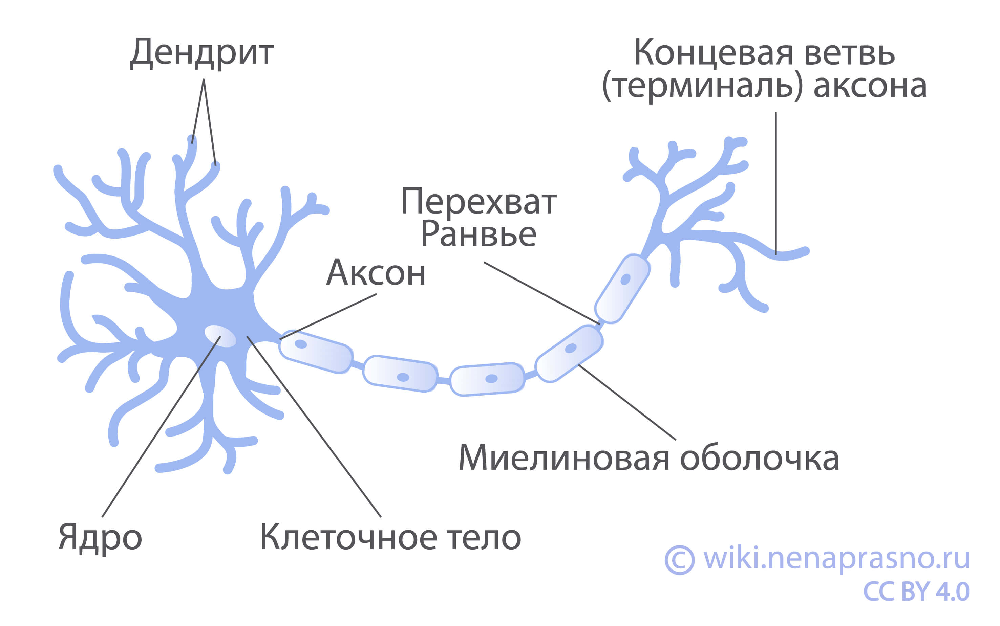
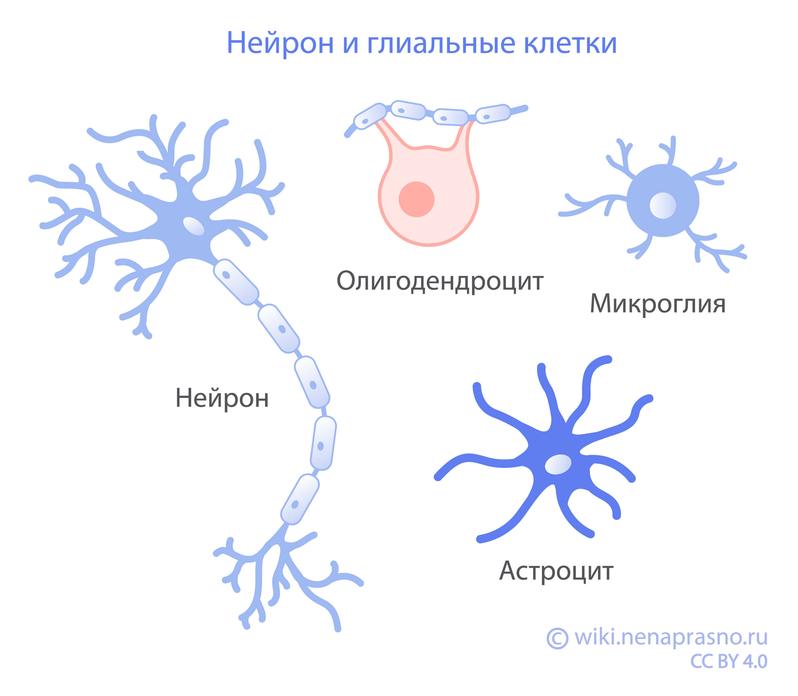

🧬 Нейроны — это специализированные клетки, составляющие основу нервной системы. Они передают, принимают и обрабатывают информацию с помощью электрических и химических сигналов. Нейроны обеспечивают работу мозга, спинного мозга и периферических нервов.
🧬 Neurons are specialized cells that form the basis of the nervous system. They transmit, receive and process information using electrical and chemical signals. Neurons ensure the functioning of the brain, spinal cord and peripheral nerves.
🧬 Нейрондар - жүйке жүйесінің негізін құрайтын мамандандырылған жасушалар. Олар электрлік және химиялық сигналдар арқылы ақпаратты жеткізеді, қабылдайды және өңдейді. Нейрондар мидың, жұлынның және перифериялық жүйкелердің жұмысын қамтамасыз етеді.
⚡ Каждый нейрон состоит из трех основных частей: дендритов (принимают сигналы), тела клетки (обрабатывает информацию) и аксона (передаёт сигнал дальше). Конец аксона соединяется с другими нейронами или клетками тела в синапсах.
⚡ Each neuron consists of three main parts: dendrites (receive signals), cell body (processes information) and axon (transmits the signal further). The end of the axon connects with other neurons or body cells at synapses.
⚡ Әрбір нейрон үш негізгі бөліктен тұрады: дендриттер (сигналдарды қабылдайды), жасуша денесі (ақпаратты өңдейді) және аксон (сигналды әрі жеткізеді). Аксонның ұшы басқа нейрондармен немесе дененің жасушаларымен синапстарда жалғанады.

Строение центральной нервной системы
Structure of the central nervous system
Орталық жүйке жүйесінің құрылымы
Центральная нервная система (ЦНС) — центр обработки информации в организме. Она состоит из головного и спинного мозга. Мозг контролирует большинство функций, включая сознание, движение, мышление, речь и 5 органов чувств: зрение, слух, тактильные ощущения, вкус и обоняние.
The central nervous system (CNS) is the information processing center in the body. It consists of the brain and spinal cord. The brain controls most functions, including consciousness, movement, thinking, speech and 5 senses: vision, hearing, touch, taste and smell.
Орталық жүйке жүйесі (ОЖЖ) - ағзадағы ақпаратты өңдеу орталығы. Ол ми мен жұлыннан тұрады. Ми сананы, қозғалысты, ойлауды, сөйлеуді және 5 сезім мүшесін: көру, есту, жанасу, дәм және иіс сезімін басқарады.
Спинной мозг — продолжение головного мозга. Он передает сообщения в головной мозг и сигналы от него через сеть периферических нервов.
The spinal cord is an extension of the brain. It transmits messages to the brain and signals from it through a network of peripheral nerves.
Жұлын - мидың жалғасы. Ол миға хабарларды және одан сигналдарды перифериялық жүйкелер желісі арқылы жеткізеді.
Каждая из структур головного и спинного мозга состоит из разных тканей и клеток. Существуют две большие группы клеток — нейроны и глия.
Each of the structures of the brain and spinal cord consists of different tissues and cells. There are two large groups of cells - neurons and glia.
Ми мен жұлынның әрбір құрылымы әртүрлі тіндер мен жасушалардан тұрады. Екі ірі жасуша тобы бар - нейрондар және глия.
Нейроны
Neurons
Нейрондар
Нервная клетка (нейрон) состоит из:
A nerve cell (neuron) consists of:
Жүйке жасушасы (нейрон) мыналардан тұрады:
тела клетки, где находится ядро с генетической информацией и органоиды (структуры, осуществляющие обмен веществ), поддерживающие жизнедеятельность клетки;
cell body containing the nucleus with genetic information and organelles (structures that carry out metabolism) that support the cell's vital activity;
жасуша денесі, онда генетикалық ақпараты бар ядро және жасушаның тіршілігін қолдайтын органоидтар (зат алмасу процестерін жүзеге асыратын құрылымдар) орналасқан;
дендритов — коротких разветвленных отростков, обеспечивающих обмен сигналами с другими нейронами;
dendrites - short branched processes that provide signal exchange with other neurons;
дендриттер - басқа нейрондармен сигнал алмасуын қамтамасыз ететін қысқа бұтақталған өсінділер;
аксона — длинного отростка, покрытого миелиновой оболочкой, проводящего нервный импульс от тела нейрона к другому нейрону или органу;
axon - a long process covered with a myelin sheath that conducts a nerve impulse from the body of the neuron to another neuron or organ;
аксон - миелин қабығымен қапталған ұзын өсінді, нейрон денесінен басқа нейронға немесе мүшеге жүйке импульсін өткізеді;
терминалей аксона — концевых разветвлений, обеспечивающих связь с другими клетками — нервными, мышечными, железистыми.
axon terminals - terminal branches that provide communication with other cells - nerve, muscle, glandular.
аксон терминалдары - басқа жасушалармен (жүйкелік, бұлшықеттік, бездік) байланысты қамтамасыз ететін соңғы бұтақтар.
Глия
Glia
Глия
Глиальные клетки или глия — вспомогательные клетки нервной ткани, обеспечивающие защитную и иммунную функции.
Glial cells or glia are auxiliary cells of nervous tissue that provide protective and immune functions.
Глиялық жасушалар немесе глия - жүйке тінінің қорғаныс және иммундық функцияларды қамтамасыз ететін көмекші жасушалары.
Глия состоит из:
Glia consists of:
Глия мыналардан тұрады:
-астроцитов,
-astrocytes,
-астроциттер,
-олигодендроцитов,
-oligodendrocytes,
-олигодендроциттер,
-эпендимальных клеток,
-ependymal cells,
-эпендима жасушалары,
-микроглии.
-microglia.
-микроглия.

Астроциты
Astrocytes
Астроциттер
Астроциты — клетки звездчатой формы. Составляют 20-40% глиальных клеток. Участвуют в питании нейронов, обеспечении постоянства межклеточной среды, передаче информации между нейронами.
Astrocytes are star-shaped cells. They make up 20-40% of glial cells. They participate in the nutrition of neurons, maintaining the constancy of the intercellular environment, and transmitting information between neurons.
Астроциттер - жұлдыз тәріздес жасушалар. Олар глия жасушаларының 20-40% құрайды. Нейрондарды қоректендіруге, жасушааралық ортаның тұрақтылығын қамтамасыз етуге, нейрондар арасында ақпарат алмасуға қатысады.
Олигодендроциты
Oligodendrocytes
Олигодендроциттер
Олигодендроциты вырабатывают миелин для миелиновой оболочки, способствующей более быстрому проведению импульсов по аксону. Один олигодендроцит способен покрыть миелином до 50 сегментов аксона.
Oligodendrocytes produce myelin for the myelin sheath, which promotes faster impulse conduction along the axon. One oligodendrocyte can cover up to 50 axon segments with myelin.
Олигодендроциттер аксон бойынша импульстерді тезірек өткізуге ықпал ететін миелин қабығын түзетін миелин өндіреді. Бір олигодендроцит 50-ге дейін аксон сегментін миелинмен қаптай алады.
Эпендимальные клетки
Ependymal cells
Эпендима жасушалары
Эпендима — внутренняя выстилка системы желудочков головного и спинного мозга, а также спинномозгового канала. Состоит из эпендимальных клеток, участвующих в выработке и циркуляции спинномозговой жидкости.
Ependyma is the inner lining of the ventricular system of the brain and spinal cord, as well as the spinal canal. It consists of ependymal cells involved in the production and circulation of cerebrospinal fluid.
Эпендима - ми мен жұлынның қарыншалар жүйесінің, сондай-ақ спинномозгтық каналдың ішкі қабаты. Ол спинномозгтық сұйықтықты өндіруге және айналымына қатысатын эпендима жасушаларынан тұрады.
Выводы
Conclusions
Қорытынды
Центральная нервная система — часть нервной системы, состоящая из головного и спинного мозга.
The central nervous system is part of the nervous system consisting of the brain and spinal cord.
Орталық жүйке жүйесі - ми мен жұлыннан тұратын жүйке жүйесінің бөлігі.
Структуры головного и спинного мозга состоят из разных тканей и клеток, в которых различают две большие группы: нейроны и глия.
The structures of the brain and spinal cord consist of different tissues and cells, which are divided into two large groups: neurons and glia.
Ми мен жұлын құрылымдары әртүрлі тіндер мен жасушалардан тұрады, олар екі ірі топқа бөлінеді: нейрондар және глия.
Гемато-энцефалический барьер — важная структура ЦНС, не позволяющая проникать в мозг ядам, а также многим лекарственным препаратам, в том числе противоопухолевым.
The blood-brain barrier is an important structure of the CNS that prevents toxins and many drugs, including anticancer drugs, from entering the brain.
Гемато-энцефаликалық кедергі - миге улардың және көптеген дәрілердің, соның ішінде қатерлі ісікке қарсы дәрілердің енуіне жол бермейтін ОЖЖ-нің маңызды құрылымы.